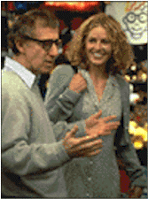

Contents | Features | Reviews | News | Archives | Store |
 |
|
| Movie Credits | Buy It! |
Deconstructing Harry
Review by Carrie
Gorringe
Posted 2 January 1998
|  | Written and Directed by Woody Allen Starring
Caroline Aaron, Woody Allen, |
Harry (Allen) is a true believer in the dictum that art should imitate life; much of his fame has been derived from his ability to turn the lives of his friends and ex-wives into all-too-thinly-veiled romans ´ clef – so thinly veiled, in fact, that his subjects do not consider imitation to be the highest form of flattery; to many of them, this literary genre can best be defined as character assassination just a hair’s breadth shy of libel litigation, since Harry always manages to make himself into a hero in any situation, regardless of the cost to the truth. The restless Harry always claims that "no idea can hold me." Neither can any individual: the deceit and infidelity so prominent in Harry’s literary life is echoed in his personal dealings: Joan (Alley),one of his ex-wives and the mother of his only son is so enraged by his duplicity that she restricts access to the child in the hope that the acorn will fall very, very far from the tree. She has reason to hope for that outcome: Harry is a habitue of prostitutes – a classic outlet for the sexually needy but emotionally noncommittal and/or self-absorbed male. His entire personal life is littered with emotional train wrecks; every encounter with a friend is conducted in either a detached or hostile fashion (former lovers, for the most part, fall overwhelmingly into the latter category). If it weren’t for his critical acclaim, he would be judged a complete failure. Moreover, Harry is about to be condemned by the past he can’t seem to remember: he is suffering from a severe case of writer’s block which is causing him to perceive objects out of focus (perhaps a metaphoric judgement, 8 1/2-style, on the life he has led?), so there is a dreaded possibility that the artist may be devoured by his own creation – himself.
There is one bright moment cutting through the gloom. Having just received an award from his alma mater, Harry is anxious to turn it into one of those Kodak moments so necessary for the care and feeding of one’s ego. There is one slight problem: no one wants to provide the nutritional support. Even Joan will not relent and allow their son to accompany Harry. Nevertheless, Harry manages to cobble together an oddball group of supporters of sorts, including a wildly-clad hooker named Cookie (Goodman) and his son, kidnapped for the day in broad daylight in front of his school, and drives off in search of self-reaffirmation. Finally, piling worse upon bad, his latest ex-girlfriend, Fay (Shue), is about to get married to Larry (Crystal), one of Harry’s oldest and most bitter rivals. Realizing too late that he loves Fay, but unable to resist claiming his prize, Harry attempts to win both through delaying tactics while staying one step ahead of his son’s mother and the state patrol.
Although writer-director Allen has claimed that Deconstructing Harry has no relevance to his own personal situation, there are the usual trademark touches in self-reflexiveness for Allen aficionados to savor at their leisure; there are references to the Holocaust, the self-deprecating Jewish shtick, hostility to relatives, a life in emotional chaos, a plot line consisting of nothing more than the usual series of neuroses strung together by the sparsest of justifications, etc. that make it impossible to perceive this film as coming from anyone other than America’s neurotic darling of the intellectually ambitious, though even Allen’s most diehard fans may be shocked by the level of vulgarity to which a considerable degree of the dialogue has sunk in this case. It never before seemed that the time had come when Allen would see fit to challenge Tarantino on his own (expletive deleted) turf, and we can only hope it was just a temporary lapse into profane fancy rather than a permanent excursion into comedic poverty.
On balance, Deconstructing Harry is a film for the most diehard of Allen fans. This is not to say that Deconstructing Harry doesn’t have its moments, for it most assuredly does; anyone who can depict Hell as nothing more than the worst excesses of 1970's rec room décor – complete with the incongruity of a classic English study – accompanied by a Gene Krupa backbeat, is never without hope. Moreover, there is a laceratingly funny line about Nazi intentions which rivals, in comedic force, Allen’s prior reference (in Hannah and Her Sisters) to a date being about as much fun as the Nuremberg Trials. Naturally, Allen also enriches his film with the usual round of great performances from great actors (the standout here is Judy Davis, who, as Mira Sorvino before her in Mighty Aphrodite, has a solitary scene in which she wipes the floor with Allen), but their contributions, though enjoyable, are all too fleeting. It’s like being able to get one sip of the finest champagne before someone else swipes your glass and the rest of the bottle, and all you’re left with are the dregs. For outsiders, the whole of Deconstructing Harry feels like the dregs of a fine Allen film: a too-brief draught in a desert of comedy. If Allen is in the mood for some deconstruction, perhaps he should be pondering his writing style as opposed to his navel.
Contents | Features | Reviews | News | Archives | Store
Copyright © 1999 by Nitrate Productions, Inc. All Rights Reserved.